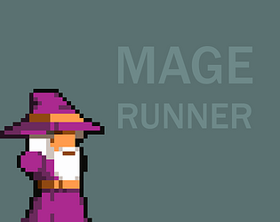
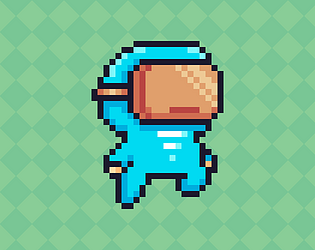
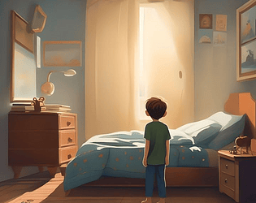

Danilo Erler Lima - "Loklos"
Amante de Jogos e Tecnologia, nascido na Serra-ES Danilo é um jovem que atua como Educador e Desenvolvedor de Jogos
Cientista da Computação pela Universidade Federal do Espirito Santo, Estudante de Programação de Jogos Digitais pelo CEET Vasco Coutinho.
Jogos
Patológico
Um pato acaba de sair do desemprego ao conseguir uma vaga como psicólogo. Ele só não esperava ter que trabalhar na torre de babel atendendo animais distintos. Siga-o nessa nova aventura em que ao passo de entender a linguagem do seus pacientes você também trabalha seus traumas e conflitos internos.
Mage Runner
Um Mago explora uma floresta desconhecida enquanto enfrenta diversos inimigos desconhecidos
O Resgate da Emilia
Um Mago explora uma floresta desconhecida enquanto enfrenta diversos inimigos desconhecidos
Loklos Platform
Um desafio de Plataforma com 10 fases distintas, que instiga a precisão do jogador, desviando de obstaculos e explorando o cenário.
Quintas Feiras
Visual Novel desenvolvida como atividade da disciplina de Game Design do curso de Jogos Digitas - CEET Vasco Coutinho
Projetos
Projeto Graduacao - ALNS Tabela Horário
TCC Ciência da Computação pela UFES. O trabalho envolve o estudo e a proposição de um algoritmo de solução ao problema de tabela horário utilizando a técnica de Adaptative Large Neighborhood Search (ALNS) para os cursos de Informática e Computação da UFES
LCEE
Atividades realizada para o Laboratório de Computadores da Engenharia Eletrica
Compilador de Pascal para LLVM
Trabalho da Disciplina de Compiladores, com a construção de um compilador da linguagem pascal para linguagem de máquina LLVM
Gaming HUB
Trabalho da Disiciplina de Projeto Integrado 1, O Gaming Hub surgiu com a intenção de facilitar a vida da comunidade gamer. Nele os usuários podem rapidamente obter informações cruciais, tais como preço, notas e opiniões sobre os jogos que estão no catálogo do site.
Shell Simulator
Trabalho da Disciplina de Sistemas Operacionais, "Development of a shell (vaccine shell) to practice concepts of process manipulation. Developed in C by @daniloelima, @enzocussuol and @VitorBonella."